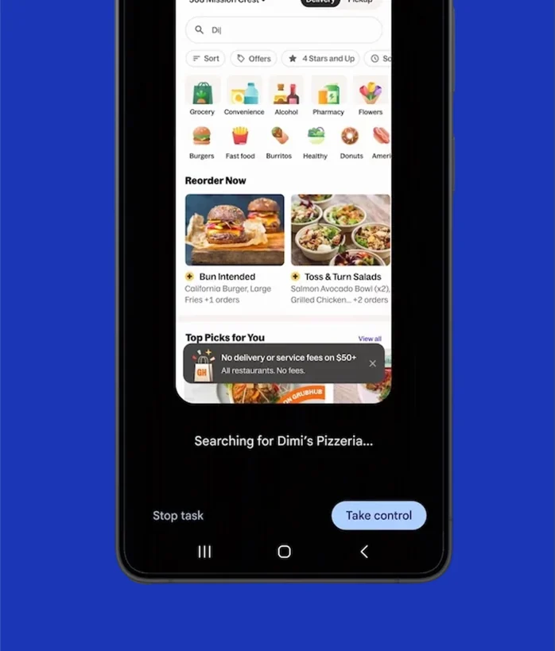
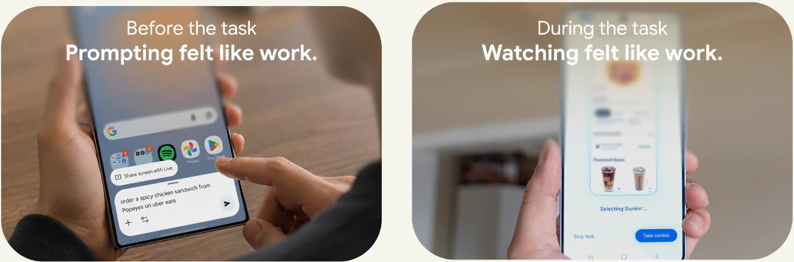
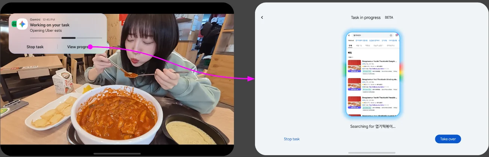
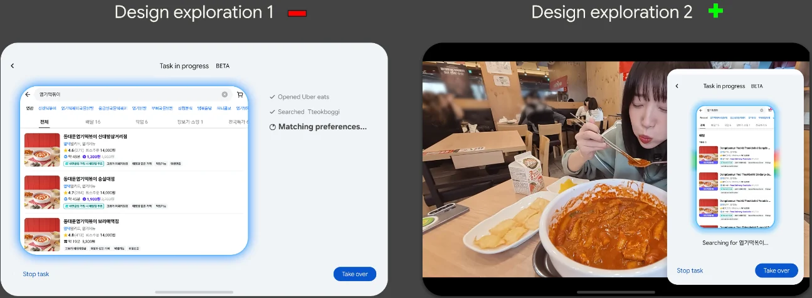
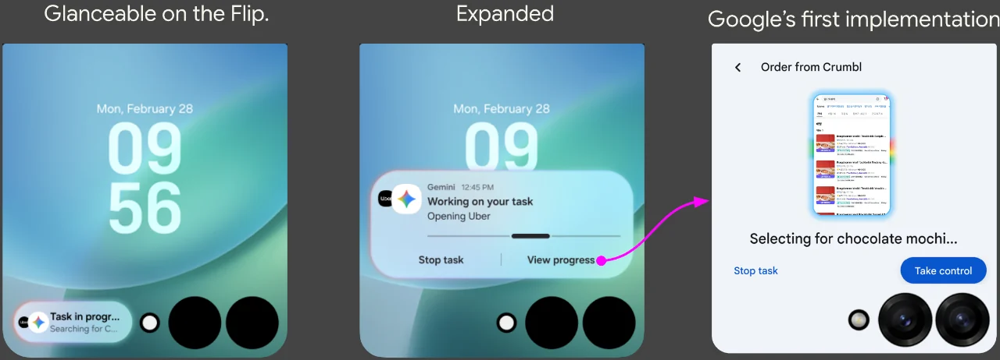
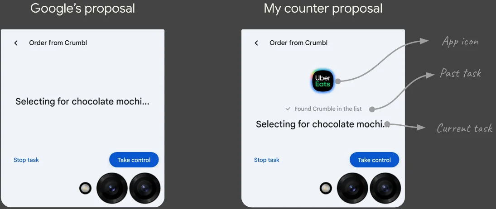
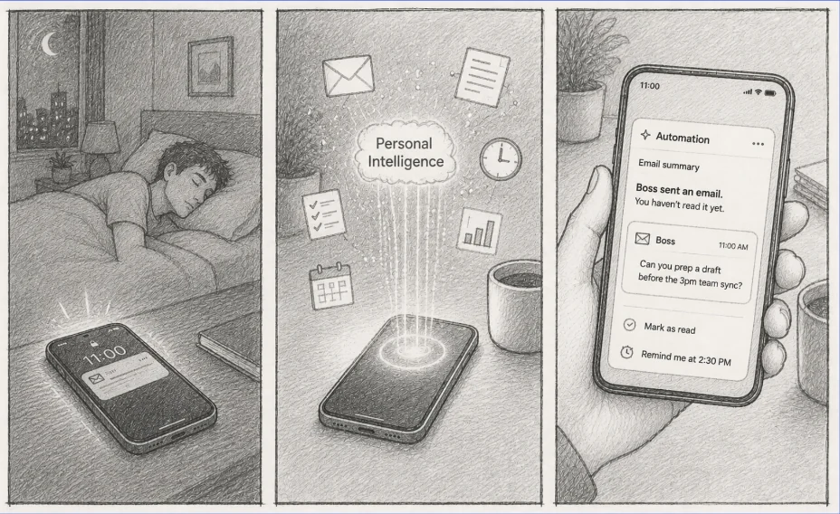

Gemini Automation
Turning an AI capability into a device experience

Gemini can now run multi-step tasks across apps, like ordering dinner or booking a ride. Google built the agent. My job was figuring out how that capability should actually show up on a Galaxy device. I led design alignment between Samsung and Google, and every proposal here went through a workstream where executives from both companies sat at the table.
A breakthrough capability that almost no one used
Only 1 in 200 Gemini users had ever tried automation. The other 199 never started.

It promised delegation but demanded supervision
Two things stood out. Before the task, you stare at a blank prompt, and typing it out feels like work. During the task, you watch it run and wonder if it will work. That isn't delegation. It's babysitting.

Design story 01: during the automation
Automation should fit the foldable: floating on the Fold, glanceable on the Flip.
Fold: keep the main task in front
Imagine you're watching a video while Automation orders your dinner in the background. You just want a glance. Google's first implementation sent "View progress" into a full screen inside Gemini. Your video stopped and your task paused. I pushed back.

I explored two directions. A full task history on screen meant reading a list instead of doing. A floating panel over the main task let you stay where you were while the AI worked in the corner. The floating panel won, and the Fold's large screen made it possible.

Flip: check progress without opening the phone
Google's first version showed the actual app screen on the cover display: a tiny copy of the agent navigating a delivery app on a screen about two inches wide. At that size the text isn't legible, and glanceability is the small device's whole identity.

My counter-proposal shows the app icon so you know what's running, the past step checked off, and the current step below it. Everything stays on the cover screen with the phone closed.

Design story 02: the North Star
Starting an automation had two problems. Automation executes, but it doesn't know you: no personal context, no preferences. And the blank prompt makes people freeze. The capability was there, but it didn't know who you were or tell you where to start.
So I defined a North Star: the AI that acts before you ask.
Know
Read context from your personal data.
Anticipate
Predict what you actually need.
Act
Surface the right automation at the right moment. No prompt required.

The widget was already waiting
Your boss emails, "Can you prep a draft before the 3pm team sync?" You haven't opened Gmail, but Automation has cross-referenced the email with your calendar. A home screen widget asks, "Deck ready before 3 PM?" One tap starts the draft.
Recent automations, ready to rerun
Past automations are saved and surfaced in a drawer, not buried in logs. Pick one and it runs again, with no re-prompting.
A multi-step automation as one icon
Friday evening, wine, no car. One home screen tap calls an Uber, sets the wine bar as the destination, and pushes the arrival time to your calendar. One tap replaces three apps and four manual steps.
Impact: from blank-prompt panic to ambient intelligence
Before
- Open the Gemini app
- Stare at a blank prompt
- Think of what to type
- Manually compose the automation
- Hope it works
- Gemini reads context overnight
- A suggestion appears on the home screen
- One tap to run it
The prompt is gone. The result is already there.
Lesson learned
Google had the agent. I designed where it lived.
The same lens behind Now Nudge, knowing, anticipating, and acting, turned a powerful capability into something people would actually use.